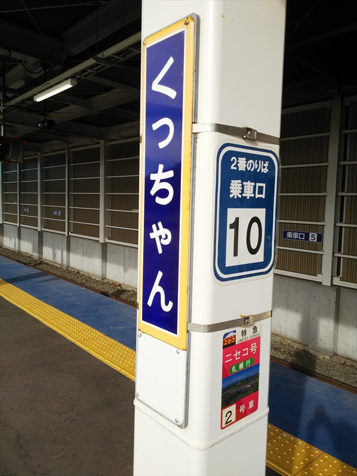

さて、やって来たのは東梅田。昔から、ここに近鉄バスのバス停が
ありましたが、初めてここから乗り込みます。
今回は仙台まで、夜行バスで一気に移動です。ここ数年、東京まで鈍行
＋東京から仙台まで夜行バス、という組合せで大阪仙台間の移動してた
ので、楽かと思い行きや、冷房強くて寒いねん！！
ほんま不快なバスやったわ。
で、あげくの果てに３０分も遅れて到着。今までの夜行バスで早着はあ
っても、ここまでの延着はなかったで。
仙台からの乗り継ぎは結構余裕あるスケジュールやったのに、バス降り
たのが発車の７分前！
それも、駅前を通り過ぎて若干離れたところに停まりやがったので、ダ
メもとで朝の仙台駅に向かって走った走った！切符も買わなアカンのに
～
しかし悲しいかな、初老のジジイはすぐに息が上がって、諦めて歩きま
した・・・。ほんま怒り心頭やで。
で、切符買って改札の前に来たら、なぜか乗る予定の電車の表示が発車
時間過ぎてるのに表示されてて・・・「遅れてるんや！」と気づいて慌
ててダッシュ！背負ってたカバンが閉まるドアにはさまれかけながらも、
滑り込みセーフっ！
バス降りて最初に走ったのが効きました。この歳にして、諦めない心が
大事なことを改めて学びました。っつーか、しばくぞ宮城交通。

で、今回は青春１８ではなく、「北海道＆東日本パ
ス」という、鈍行専用の切符を使った旅となります。
一ノ関駅。
盛岡あたりまでは慣れた旅路です。
盛岡に到着。
今回の切符の最大のメリットは、盛岡青森間の旧東
北本線も乗れる！ということです。ＪＲでなくなっ
てからなかなか乗る機会のない区間なので楽しみで
す。
運よく花輪線の車両です。クロスシートなんで好き
な車両です。
時間に余裕があったので、渋民駅で途中下車。
ドカベンで山田たちが弁慶高校を訪ねて降り立った
ような記憶があります。
静かないい駅でした。
啄木の地元なので、跨線橋に啄木の歌がたくさん飾られています。
こういう心境が、啄木の時代からあったんやなぁ。
ここから先はロングシート車を覚悟してたのですが、なんとクロスシー
ト車でした。ありがたい。
八戸からは、大湊線に行く快速に乗り継ぎます。
時間に余裕があるので、終点の大湊まで行ってみま
しょう。
東北も奥に進むと、車窓に果て感が出てきますね。
大湊線の分岐駅、野辺地に到着。
すると、突然、「この列車は野辺地駅で運転打ち切
りになります」のアナウンス！理由はぇ！理由も言
わんて、何様なんでしょう。車掌のところに行って
理由聞いたら、大湊が大雨とのこと。
ここが目的ならブチ切れのところなんですが、それ
ほどの思いもなかったので、気持ちを切り替えます。
（どうせ夜行バスのせいで乗れんかったところやし）
沿線には温泉所が多いのですが、一番惹かれた姉戸
川温泉に行くことにします。
なんと駅前にあります。
１９８０開湯とは思えない渋さ。
平日の夕方なので、ガラ空きです。
ぬるめのいいお湯でした。今年は富山といい、いい
温泉に巡りあえました。
東のほうは、こっちの感覚より日暮れが早いっすよね。ひと風呂あびると、もう日暮れ。貨物の牽引も赤い機関車です。
久々に青森到着。
昭和な駅ビルも解体されてました・・・
夜の青森は、かなり涼しいっす。
新青森駅到着。
渡道はフェリーにするか迷ったのですが、フェリー
乗り場まで暗い中歩いて行くのは大変で、タクシー
使うと結局新幹線と変わらないので、今回は珍しく
新幹線で函館に向かいます。
ビジネスホテル以外になにもない、田舎の新幹線駅です。
北海道新幹線、尼ヲタさん東京在住時代に、ぜひ見
送りに行きたいと言って上野まで来てくれた時以来
です。
予想通りガラガラでした。乗った車両には私入れて
客２名・・・
新幹線で通り抜ける青函トンネルって、感動ないっ
すね。
新函館北斗に到着。
今日の宿は函館駅前ですが、ここから函館までも時
間かかります。こんな新幹線、要るの？
無事、函館に到着です。
初めての渡道は連絡船最後の夏でした。もうあれか
ら３５年て・・・恐ろしい。
朝の函館朝市。５時半ぐらいですが、もう開いてる
店ありますね。
しかし、寒い！
函館駅。
今日も黙々と北上します。
おっ、もう入線してる。
とは言っても、鈍行の本数は少なく、待ち時間も長
いので、寄り道がてら変わったルートで進んで行き
ます。
始発の函館本線の鈍行は、藤城線・砂原線経由の森
行きです。
ちなみに新幹線札幌開業後の並行在来線の扱いは混
沌としています。長万部以北は決着ついたのですが、
函館－長万部間は貨物の問題がからんでゴールが見
えてません。
貨物のために函館－長万部間は残ると希望的観測を
持ってるのですが、残す場合のルートもどうするの
か見えてきません。藤城線・砂原線は貨物用に残る
と見ていますが、廃止されてもおかしくないルート
です。
２両編成で意外と思いましたが、大沼駅で分割して
函館行になるようで、１両は回送目的という訳です
ね。
通路を広げる改造がされてますね。

秋空のもと、駒ヶ岳がキレイに見えてます。
藤城線・砂原線・函館本線が一旦集結する大沼駅。
運転士自ら切り離し作業してました。
特急が通過していきます。
このまま森で北上する列車を待っても、次に来るの
は函館本線経由でやってくる鈍行で、これには一旦
大沼に戻っても乗れるので、もちろん砂原線を往復
することにします。
渡島沼尻駅で貨物の行き違い待ち。
単に乗ってるだけでは面白くないので渡島砂原駅で
途中下車することに。
実はこの砂原、戦前には森からこの街まで私鉄が走
ってたそうです。全く想像できない、のどかな漁港
のある街です。
のんびりしたいい時間を過ごしました。
上り列車で大沼まで戻ります。
大沼まで戻ってきました。
ここからは、本線で長万部駅を目指します。

森駅に到着。
非常に天気が良く、噴火湾ごしに有珠山？樽前山？
が見えてます。
森駅でだいぶ停車します。これはチャンス！
森名物、いかめし屋は健在。
昼には少し早いですが、いかめしゲット！
３６年前に初めて北海道に渡ったときも、ここでいかめし買いました。
わざわざ列車を遅らせてまで。
しかし、小さい・・・
ボックスシートで食べるいかめし、いいっすね～。味は落ちたような
・・・値段は倍以上してんのに。
そーこーしてるうちに長万部に到着。
ここからが本日のメインイベント、山線走破です。
昔から寂しい駅前でしたが、よりいっそう寂しい感
じがしてます。
駅前のロータリーも、かなりガタガタ。
というか、新幹線整備でいっきにキレイにするつも
りなんでしょう。
次の列車まで時間があるので、乗り鉄には有名な長
万部温泉に行ってみます。
駅の真裏にあるんですが、こっち側の出口がなく、
１５分ぐらい歩く必要があります。
共同浴場はなく、何件かのホテルが日帰り入浴をやってます。一番おも
むきのありそうな、長万部温泉ホテルへ行くことに。
熱めのいいお湯でしたが、先に入ってた地元客は熱
さが足らんと不満げでした。
ここにかかってたＢＧＭがＹＯＡＳＯＢＩ。なんちゅうセンスや。
ホームに戻ると、結構並んでたので座るのあきらめ
てたのですが、運よく座りたいほうのボックスシー
トに座ることが出来ました。
山の中を走るいい線です。景色は最高。天気も良く、
羊蹄山もキレイに見えます。
ここはニセコ駅の手前ですが、いくつかの保存車両
のある公園があって、ＳＬが見えてます。

倶知安到着。 すでに新幹線の工事が進んでいて、今までのホームはすでに撤去され、仮設のホームになってます。
気づいたけど、北海道名物の、駅名標の下のサッポロビールの広告、なくなってますね。昨日の函館ではあったから、都市部以外はや
んぺしたんかな。
そういえば、倶知安町は再来年にも在来線を廃止し
ろと暴論吐いてます。新幹線整備に邪魔だとか。
とんでもない暴論吐いてますね。自分のとこさえ良
ければいいという田舎者根性丸出しです。
金落とすリゾート客の外人しか見てないんでしょう
ね。
駅舎は健在。
国際リゾート化している倶知安では、欧米人もけっ
こう降りてました。
倶知安からの小樽行は２両編成で余裕ありました。
かぶりつきポジションを堪能。
エゾリスが横切るのが見れました。
小樽から先は何度も乗ってる行程で、新幹線が出来
ても残ります。
ＪＲ北海道の車両は窓が汚いという話でしたが、小
樽からの快速は噂通りでした。
海が見える左側に座りましたが、キレイには見えま
せんでした。
無事、札幌に到着。
さて、時間があるので、一度乗ってみたかった地下鉄南北線の終点の真
駒内までやってきました。
線路がない！そう、ゴムタイヤで動くんですよね。よく揺れました。
網棚もないし、荷物持って乗りづらい地下鉄です。
未だにほぼ全部の窓を開けて走ってます。北海道は
５類になってないんやったっけ？
札幌五輪の選手村の建物が残ってるんですよね。
地上部の多い地下鉄ですが、全部シェルターで覆わ
れてます。メンテ大変やがな。
せっかくやからラーメンでもと思って調べると、純
連という有名な店が沿線にあるとのことで、行って
みることに。
誰かさんの海鮮オンパレードとは違って、今回一番
贅沢な食事です。１０００円かかってません。
すみれの元となる店だそうですが、すみれのほうに
軍配を上げときます。でも美味しかったです。
札幌から、まだ先へ進みます。
岩見沢到着。
岩見沢からは、快速エアポート車両が充当されてま
した。
有料席もここまで来たら無料で開放されているので、
お得です。
滝川到着。今日はここまで。
３６年前も、ここまで来て、駅舎の軒下で寝袋に入
って寝ました。
さすがに今回はその再現はよーせんので、ホテルを
とってます。
駅前で声かけて来るねーちゃんがいて、何かと思っ
たら、わらしべ長者チャレンジをしてるとのこと。
最初は断りましたが、そーいえばお菓子が残ってた
と思い出し、引き返して交換してあげました。
交換したのは使用済みの新幹線の切符でした。とほ
ほ・・・
今朝も寒いっ！
６時前の滝川駅。
いきなり本日のメインイベントです。
３６年前は、ほぼ同じ時間で釧路行の鈍行に乗って
根室まで行きましたが、悲しいかな令和の時代は、
災害復旧されずに廃止が決定して、東鹿越までしか
列車は走っておりません。
まさかの２両編成。先頭は観光車両？
と思ったら、１両は回送で乗れませんでした。
観光用車両のほうだけ乗れました。
芦別に到着。 昔はここから、炭鉱を結ぶ私鉄が走ってました。平成元年までは石炭輸送があったとのこと！
ここ芦別で乗れなかった１両を切り離し。
行き違いもあって、結構停まってます。
富良野を過ぎて、いよいよ廃止区間です。
さすがに廃止される区間だけあって、自然豊かです。
東鹿越に到着。
乗ってきたのはほとんど鉄っちゃんです。
線路は新得・釧路方面まで続いてます。
富良野からここまで、というか休止区間の新得までが、来年春に廃止
となります。
駅前には代行バスが待ってます。
代行バスに乗る人と、そのまま引き返す人が半々、という感じでした。
私は代行バスに乗り込んで、先に進みます。
幌舞ならぬ幾寅駅。映画のロケ地で有名で、謎のカットボディも展示されています。
数名の観光客が降りていきました。
代行バスの車中からは、ところどころ、線路が見え
ます。
落合駅。このまま朽ちていくのでしょうか・・・
新得到着。
ここから普通列車が通ってない区間となるので、乗
車券のみで特急に乗れます。
といっても、新夕張まで。そこから先は、鈍行があ
るといっても日に数本。現実的にはここで降りて鈍
行に乗り継ぐのはありえない選択で、このまま乗り
通したら結局新得からの特急料金と乗車件が必要で
す。金かかる・・・
ホームの乗り口の番号が、数字ではなくアルファベ
ットです。外人意識してるのかな？
この駅名標も来年３月までか。
特急とかち。
自由席はほぼいっぱいでした。
通路側の席を確保できましたが、せっかく景色のいい区間やのに、日
よけをおろしてる客だらけ。
外見ぃひんのやったら、窓側座るなボケっ！
せっかく北海道まで来たのに、絶景区間の景色が見れずでした。
南千歳で快速エアポートに乗り換えて、昨日も通っ
た小樽にやってきました。
駅前の三角市場は健在ですね。
３連休とあって、観光客だらけです。
さて、北海道最後の目的地へと向かいます。
ラッセル車がお出迎え。ここは小樽の総合博物館で
す。
総合博物館という名称ですが、ほぼ鉄道博物館です。
入口も駅を模してます。
場所柄、ラッセル車の展示が充実してます。
奥のレンガ庫の一部は、明治の開通時からのものだ
そうです。
レールバス！国鉄の実物を見たのは初めてです。
中まで入れました。数ある展示の中で、一番テンシ
ョン上がりました。
やっぱり小さいです。北海道のローカル線といえど
も、今より客の多かった時代、これで運びきれたん
やろか？
ラッセル車もいろんな種類があって、勉強になりま
した。
お～キハ８２。色合いが微妙ですね。連絡船の中に
積まれてた車両のほうが、リアルで状態よさげです。
ブルーシートに包まれてるのはＥＤ７５か７６で、
ＰＣＢが含まれてることが判明して解体されてしま
うそうです。
キハ８２のサボはやはり山線経由の北海ですね。
ほかの鉄道博物館と違って、広々としてます。さすが北海道。 というか、実は元々、手宮駅があった場所です。
ディーゼルカーの展示も多いです。
帰りのバスから見えた北海道っぽい建物。
今回久々に北海道に来ましたが、やっぱり北海道っぽい建物は減っ
てますね。
さて、あとは帰るだけ。 快速と普通を乗り継いで苫小牧まで戻ってきました。

ちょっとさみしげな苫小牧駅。
帰りは乗ってみたかった商船三井のさんふらわあで
大洗まで帰ります。
想像してたほど大きくない。なんちゅうマークつけ
てんねん。
中はきれいです。
もちろん、安いツーリストの部屋です。それでもＬ
ＣＣより高いからね。個室なんて、とんでもない！
乗船のときにカード渡されますが、最新の船みたい
に、いたるところに電子キーがあって、下級の客が
入れないようになってる、なんて構造ではないので
助かります。
浦さんはわからんやろなぁ、この感覚。
いよいよ出航！
豪華な晩餐！
私には、こーゆーのがあってます。
正直、全然たいしたことない船内でした。これやったら大阪航路のほう
が豪華やで。
大洗に到着。もっと乗っていたかったです。
約１９時間の船旅です。
時間に余裕があるのはいいっすね。朝風呂が気持ち
いい。
ツーリストの部屋も、瀬戸内航路のものより一回り
大きい気がしました。
暑い！いきなり真夏に逆戻りです。
１０分ぐらい歩くと鹿島臨海鉄道の大洗駅です。
駅前には、かじき？のモニュメント。
ここから水戸に出て常磐線に乗るのが王道ですが、
時間の余裕もあるので、逆向きに戻ります。
鹿島神宮駅に到着。
時間あるので鹿島神宮に行ってみようかとも思いま
したが、この暑さで断念。
ここからはＪＲです。
佐原に到着。
ここは古い町並みで有名なので、途中下車してみま
す。

川沿いになかなかいい感じの町並みが広がってました。 ここも舟運でにぎわった街です。
このあと、成田のサイゼリヤで夕食食べて、東京から夜行バスで戻りました。あ～しんど。